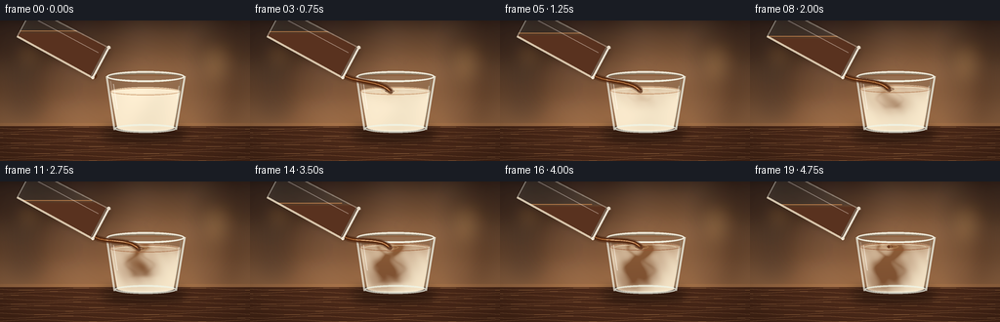
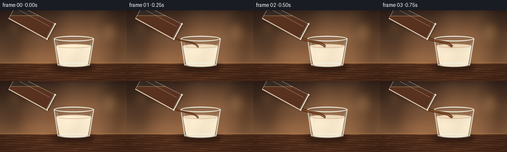

CODING AGENTS AS PIXEL WORLD MODELS
traex/GPT-5.6-Sol · material_0021
点击播放 · 原生 RGB 像素
逐轮保存的候选
回放视频、检查图与代码变化。
每份候选均可单独播放。实际图片检查记录在下方工具轨迹中。
候选 01播放与检查图
点击播放 · 原生 RGB 像素


展开代码变化
--- 上一保存版本
+++ 本次保存版本
@@ -0,0 +1,320 @@
+from pathlib import Path
+import math
+import json
+import numpy as np
+from PIL import Image, ImageDraw, ImageFilter
+import artifact_io
+
+CASE_DIR = Path(__file__).resolve().parent
+SPEC = json.loads((CASE_DIR / "task_spec.json").read_text())
+W, H = int(SPEC["width"]), int(SPEC["height"])
+N = int(SPEC["frames"])
+S = 4
+WW, HH = W*S, H*S
+
+
+def smoothstep(x):
+ x = np.clip(x, 0.0, 1.0)
+ return x*x*(3.0-2.0*x)
+
+
+def scbox(b): return tuple(int(round(v*S)) for v in b)
+def scpts(p): return [(int(round(x*S)), int(round(y*S))) for x,y in p]
+def rgba_layer(): return Image.new("RGBA", (WW,HH), (0,0,0,0))
+
+
+def make_background():
+ yy, xx = np.mgrid[0:HH, 0:WW]
+ y = yy / S
+ x = xx / S
+ # Warm café wall with a soft pool of window light.
+ u = np.clip(y/109.0, 0, 1)[...,None]
+ top = np.array([49,34,28.], dtype=float)
+ low = np.array([157,112,76.], dtype=float)
+ arr = top*(1-u) + low*u
+ glow = np.exp(-(((x-174)/72)**2 + ((y-36)/47)**2))*45
+ arr += glow[...,None]*np.array([1.00,.76,.48])[None,None,:]
+ arr += (2.3*np.sin(x*.10)+1.7*np.sin(y*.15))[...,None]
+ arr = np.clip(arr,0,255).astype(np.uint8)
+ base = Image.fromarray(arr, "RGB").convert("RGBA")
+
+ # Out-of-focus café forms and bokeh.
+ blur = rgba_layer(); d = ImageDraw.Draw(blur, "RGBA")
+ d.rounded_rectangle(scbox((7,23,42,102)), radius=8*S, fill=(35,28,26,70))
+ d.rounded_rectangle(scbox((207,13,247,105)), radius=10*S, fill=(64,40,29,65))
+ d.rectangle(scbox((214,30,219,103)), fill=(222,162,92,28))
+ for bx,by,r,c in [(31,32,10,(255,187,100,65)),(219,43,14,(255,206,120,50)),
+ (190,80,8,(255,220,147,38)),(67,69,6,(255,178,99,35))]:
+ d.ellipse(scbox((bx-r,by-r,bx+r,by+r)), fill=c)
+ blur = blur.filter(ImageFilter.GaussianBlur(9*S))
+ base = Image.alpha_composite(base, blur)
+
+ # Wooden table, seam, warm grain and a soft vignette.
+ table = rgba_layer(); d = ImageDraw.Draw(table, "RGBA")
+ d.rectangle(scbox((0,105,256,144)), fill=(76,43,27,255))
+ d.rectangle(scbox((0,105,256,108)), fill=(218,153,91,45))
+ for i in range(10):
+ yy0 = 110 + i*3.6
+ pts=[]
+ for x0 in range(-5,262,8):
+ pts.append((x0, yy0 + 1.1*math.sin(x0*.055+i*1.7)))
+ d.line(scpts(pts), fill=(212,138,77,18 if i%2 else 25), width=max(1,S//2))
+ base = Image.alpha_composite(base, table)
+
+ # Cinematic vignette.
+ vig = 1 - .27*np.clip(((x-128)/150)**2 + ((y-73)/105)**2,0,1)
+ a = np.array(base.convert("RGB"), dtype=float)*vig[...,None]
+ return Image.fromarray(np.clip(a,0,255).astype(np.uint8), "RGB").convert("RGBA")
+
+BACKGROUND = make_background()
+
+
+def draw_bezier(draw, points, fill, width):
+ # Cubic Bézier polyline.
+ p0,p1,p2,p3 = [np.array(p,float) for p in points]
+ out=[]
+ for u in np.linspace(0,1,45):
+ p=(1-u)**3*p0+3*(1-u)**2*u*p1+3*(1-u)*u*u*p2+u**3*p3
+ out.append((float(p[0]),float(p[1])))
+ draw.line(scpts(out), fill=fill, width=max(1,int(width*S)), joint="curve")
+
+
+def glass_geometry():
+ # Tilted source glass, extending naturally beyond the upper-left frame.
+ B=np.array([25.0,1.5]); M=np.array([103.0,43.0])
+ axis=(M-B); axis=axis/np.linalg.norm(axis)
+ perp=np.array([-axis[1],axis[0]])
+ corners=[B-perp*16.5, M-perp*17.5, M+perp*17.5, B+perp*16.5]
+ return B,M,axis,perp,corners
+
+
+def draw_source_glass(canvas, t, pour):
+ B,M,axis,perp,corners=glass_geometry()
+ # A soft shadow seen through the vessel.
+ shadow=rgba_layer(); ds=ImageDraw.Draw(shadow,"RGBA")
+ ds.polygon(scpts([(x+2,y+3) for x,y in corners]), fill=(14,9,7,50))
+ shadow=shadow.filter(ImageFilter.GaussianBlur(3*S))
+ canvas.alpha_composite(shadow)
+
+ bodymask=Image.new("L",(WW,HH),0); md=ImageDraw.Draw(bodymask)
+ md.polygon(scpts(corners), fill=255)
+
+ # Coffee obeys a horizontal free surface while the glass is tilted.
+ y_surface=10.5 + 13.0*pour
+ yy,xx=np.mgrid[0:HH,0:WW]
+ x=xx/S; y=yy/S
+ fluid=np.clip((y-y_surface)/3.0,0,1)
+ # amber transmission along upper edge, deep brown below
+ col=np.zeros((HH,WW,4),dtype=np.uint8)
+ col[...,0]=np.clip(111-35*fluid,0,255)
+ col[...,1]=np.clip(60-25*fluid,0,255)
+ col[...,2]=np.clip(26-11*fluid,0,255)
+ col[...,3]=(210*fluid).astype(np.uint8)
+ coffee=Image.fromarray(col,"RGBA")
+ fm=np.minimum(np.array(bodymask), (fluid*255).astype(np.uint8))
+ coffee.putalpha(Image.fromarray(fm,"L"))
+ canvas.alpha_composite(coffee)
+
+ # Horizontal coffee meniscus clipped to glass.
+ men=rgba_layer(); dm=ImageDraw.Draw(men,"RGBA")
+ dm.line(scpts(((-2,y_surface),(94,y_surface))), fill=(235,151,76,145), width=1*S)
+ men.putalpha(Image.fromarray(np.minimum(np.array(men.getchannel('A')),np.array(bodymask)),"L"))
+ canvas.alpha_composite(men)
+
+ # Transparent body tint and bright edge reflections.
+ g=rgba_layer(); d=ImageDraw.Draw(g,"RGBA")
+ d.polygon(scpts(corners), fill=(190,219,220,21), outline=(238,247,241,125), width=1*S)
+ low=[tuple(corners[3]),tuple(corners[2])]
+ high=[tuple(corners[0]),tuple(corners[1])]
+ d.line(scpts(low), fill=(255,249,228,190), width=2*S)
+ d.line(scpts([(corners[0][0]+2,corners[0][1]+1),(corners[1][0]+2,corners[1][1]+1)]),
+ fill=(255,255,247,80), width=1*S)
+ # Long moving glass gleam.
+ gleam0=B-perp*8+axis*6; gleam1=M-perp*8-axis*7
+ d.line(scpts((gleam0,gleam1)),fill=(255,255,255,95),width=1*S)
+ # Mouth: diagonal double rim and lip glints.
+ r1=M-perp*17.5; r2=M+perp*17.5
+ d.line(scpts((r1,r2)),fill=(247,252,246,220),width=2*S)
+ d.line(scpts((r1-axis*2.2,r2-axis*2.2)),fill=(180,211,211,120),width=1*S)
+ d.ellipse(scbox((r1[0]-1.7,r1[1]-1.7,r1[0]+1.7,r1[1]+1.7)),fill=(255,255,246,210))
+ d.ellipse(scbox((r2[0]-1.6,r2[1]-1.6,r2[0]+1.6,r2[1]+1.6)),fill=(255,255,246,220))
+ canvas.alpha_composite(g)
+
+
+def draw_recipient(canvas, t, pour):
+ # Ground shadow anchors the glass to the wooden table.
+ sh=rgba_layer(); d=ImageDraw.Draw(sh,"RGBA")
+ d.ellipse(scbox((103,106,191,126)),fill=(13,8,5,120))
+ d.ellipse(scbox((119,110,178,120)),fill=(4,3,2,90))
+ sh=sh.filter(ImageFilter.GaussianBlur(5*S)); canvas.alpha_composite(sh)
+
+ # Outer transparent tumbler.
+ outer=[(109,57),(117,112),(180,112),(189,57)]
+ gl=rgba_layer(); dg=ImageDraw.Draw(gl,"RGBA")
+ dg.polygon(scpts(outer),fill=(204,223,219,25))
+ canvas.alpha_composite(gl)
+
+ level=72.5-6.0*pour
+ # Liquid silhouette in gently tapered glass.
+ def side_x(y, left=True):
+ if left: return 109+(y-57)*(8/55)
+ return 189-(y-57)*(9/55)
+ lx,rx=side_x(level,True)+2,side_x(level,False)-2
+ liquidmask=Image.new("L",(WW,HH),0); lm=ImageDraw.Draw(liquidmask)
+ lm.polygon(scpts(((lx,level),(rx,level),(177.5,109.5),(120,109.5))),fill=255)
+ lm.ellipse(scbox((lx,level-4.2,rx,level+4.2)),fill=255)
+ lm.ellipse(scbox((120,105.5,178,113.5)),fill=255)
+
+ yy,xx=np.mgrid[0:HH,0:WW]; x=xx/S; y=yy/S
+ dy=np.maximum(0,y-level)
+ q=pour
+ # Base milk: warm highlights above, slightly shaded near the foot.
+ base=np.zeros((HH,WW,3),float)
+ base[...,0]=244-0.17*dy
+ base[...,1]=236-0.21*dy
+ base[...,2]=216-0.24*dy
+ base += 3*np.sin(x*.12+y*.05)[...,None]
+
+ # Procedural convection: a top coffee layer, a falling sinuous plume,
+ # and rolling side billows that expand over time.
+ conc=np.zeros((HH,WW),float)
+ if q>0:
+ top_depth=3.2+10.0*q
+ conc += (.12+.38*q)*np.exp(-dy/top_depth)
+ front=smoothstep((7+36*q-dy)/5.0)
+ pathx=143 + (3.0+7*q)*np.sin(dy*.20-5.5*q)*np.exp(-dy/42)
+ width=2.2+.12*dy+2.0*q
+ conc += .68*q*np.exp(-((x-pathx)/width)**2/2)*np.exp(-dy/42)*front
+ # Rolled cream/coffee lobes, positioned as fluid descends.
+ lobes=[
+ (143+8*math.sin(4.5*q), level+6+26*q, 7+5*q, 4+7*q, .43),
+ (137-7*math.sin(3.4*q), level+5+17*q, 9+4*q, 5+5*q, .31),
+ (153+5*math.cos(5*q), level+10+12*q, 10, 5+4*q, .26),
+ (133+4*math.sin(6*q), level+8+33*q, 5+5*q, 6+4*q, .18),
+ ]
+ for cx,cy,sx,sy,a in lobes:
+ conc += a*q*np.exp(-.5*(((x-cx)/sx)**2+((y-cy)/sy)**2))
+ # Fine curling tendrils on each side of the principal plume.
+ for off,amp in [(-1,0.22),(1,0.18)]:
+ curlx=143+off*(7+dy*.13)+5*np.sin(dy*.29+off*1.4-7*q)
+ conc += amp*q*np.exp(-((x-curlx)/(1.3+.035*dy))**2/2)*np.exp(-dy/31)*front
+ # Gentle marbling prevents a synthetic flat fill.
+ conc *= (0.95 + .06*np.sin(x*.45-y*.23+q*8))
+ conc=np.clip(conc,0,.88)
+ coffee_col=np.zeros_like(base)
+ coffee_col[...,0]=103+20*np.exp(-dy/18)
+ coffee_col[...,1]=59+16*np.exp(-dy/18)
+ coffee_col[...,2]=29+8*np.exp(-dy/18)
+ rgb=base*(1-conc[...,None])+coffee_col*conc[...,None]
+ rgba=np.dstack((np.clip(rgb,0,255).astype(np.uint8),np.array(liquidmask)))
+ canvas.alpha_composite(Image.fromarray(rgba,"RGBA"))
+
+ # Milk/coffee surface sheen and a dark impact dimple.
+ surf=rgba_layer(); ds=ImageDraw.Draw(surf,"RGBA")
+ surface_color=(177-int(35*q),122-int(40*q),74-int(25*q),145)
+ ds.ellipse(scbox((lx,level-3.8,rx,level+4.0)),outline=surface_color,width=1*S)
+ ds.arc(scbox((lx+5,level-2.5,rx-5,level+3.5)),185,350,fill=(255,248,224,105),width=1*S)
+ if q>.03:
+ ripple=3.0+2.0*math.sin(t*math.pi*4)**2
+ ds.ellipse(scbox((143-ripple,level-1.2,143+ripple,level+1.5)),outline=(87,48,25,130),width=1*S)
+ ds.ellipse(scbox((143-9,level-2.0,143+9,level+2.3)),outline=(227,186,130,70),width=1*S)
+ canvas.alpha_composite(surf)
+
+ # Glass outlines, thick foot, and characteristic vertical reflections.
+ edge=rgba_layer(); de=ImageDraw.Draw(edge,"RGBA")
+ de.line(scpts(((109,57),(117,112))),fill=(242,250,246,175),width=2*S)
+ de.line(scpts(((189,57),(180,112))),fill=(237,248,244,195),width=2*S)
+ de.line(scpts(((113,62),(120,107))),fill=(255,255,250,72),width=1*S)
+ de.line(scpts(((185,61),(179,107))),fill=(138,177,178,75),width=1*S)
+ de.ellipse(scbox((109,51.8,189,63)),outline=(245,252,247,220),width=2*S)
+ de.arc(scbox((112,54,186,61)),180,358,fill=(129,163,164,120),width=1*S)
+ de.ellipse(scbox((117,106,181,115)),outline=(232,244,239,195),width=2*S)
+ de.arc(scbox((119,107,179,113)),5,175,fill=(255,255,250,100),width=1*S)
+ # Small specular streaks.
+ de.line(scpts(((116,65),(120,91))),fill=(255,255,255,120),width=1*S)
+ de.line(scpts(((183,67),(181,80))),fill=(255,255,255,95),width=1*S)
+ canvas.alpha_composite(edge)
+ return level
+
+
+def draw_stream(canvas,t,pour,level):
+ B,M,axis,perp,corners=glass_geometry()
+ origin=M+perp*14.8 + axis*1.0 # lower lip of the tilted glass
+ # Stream is established almost immediately, then gently narrows at the end.
+ start=smoothstep((t-.005)/.10)
+ end=1-smoothstep((t-.90)/.10)
+ strength=float(start*end)
+ st=rgba_layer(); d=ImageDraw.Draw(st,"RGBA")
+ if strength>.02:
+ sway=1.0*math.sin(2*math.pi*t*1.4)
+ target=np.array([143+sway,level+.6])
+ p0=origin; p3=target
+ p1=p0+np.array([11,7]); p2=p3+np.array([-9,-11])
+ width=1.3+3.0*strength
+ # soft outer refraction, dark core, and amber edge glint
+ draw_bezier(d,(p0,p1,p2,p3),(61,31,15,90),width+2.2)
+ draw_bezier(d,(p0,p1,p2,p3),(84,42,18,245),width)
+ hp0=p0+np.array([-.8,-.4]); hp1=p1+np.array([-.8,-.4])
+ hp2=p2+np.array([-.8,-.4]); hp3=p3+np.array([-.8,-.4])
+ draw_bezier(d,(hp0,hp1,hp2,hp3),(223,137,63,145),max(.7,width*.25))
+ # tiny bright neck and impact bead
+ d.ellipse(scbox((target[0]-2,target[1]-1,target[0]+2,target[1]+2.3)),fill=(77,38,18,180))
+ else:
+ # Beginning/end droplets retain visible pouring motion.
+ age=t if t<.5 else (t-.90)/.10
+ u=float(np.clip(age,0,1))
+ pos=origin*(1-u)+np.array([142,level]) * u + np.array([0,7*u*(1-u)])
+ r=1.2+1.0*(1-u)
+ d.ellipse(scbox((pos[0]-r,pos[1]-r,pos[0]+r,pos[1]+r*1.4)),fill=(92,46,19,230))
+ canvas.alpha_composite(st)
+
+
+def draw_steam(canvas,t):
+ # Sparse translucent steam makes the coffee read as warm without obscuring it.
+ steam=rgba_layer(); d=ImageDraw.Draw(steam,"RGBA")
+ for k,(x0,y0) in enumerate([(151,54),(160,57)]):
+ pts=[]
+ for j in range(17):
+ u=j/16
+ x=x0+3.0*math.sin(u*5+k+t*3)+2*u
+ y=y0-18*u
+ pts.append((x,y))
+ d.line(scpts(pts),fill=(245,232,213,18),width=1*S)
+ steam=steam.filter(ImageFilter.GaussianBlur(1.2*S)); canvas.alpha_composite(steam)
+
+
+def render_frame(i):
+ t=i/(N-1)
+ # Coffee transfer follows a smooth, physically legible progression.
+ pour=float(smoothstep((t-.02)/.90))
+ canvas=BACKGROUND.copy()
+ # Recipient first, stream over it, then source glass covers the stream origin.
+ level=draw_recipient(canvas,t,pour)
+ draw_stream(canvas,t,pour,level)
+ draw_source_glass(canvas,t,pour)
+ draw_steam(canvas,t)
+ # Fine warm color grade and downsampled antialiasing.
+ im=canvas.convert("RGB").resize((W,H),Image.Resampling.LANCZOS)
+ arr=np.asarray(im).astype(np.float32)
+ arr[...,0]=np.clip(arr[...,0]*1.025+2,0,255)
+ arr[...,1]=np.clip(arr[...,1]*1.005,0,255)
+ arr[...,2]=np.clip(arr[...,2]*.97,0,255)
+ return np.clip(arr,0,255).astype(np.uint8)
+
+
+def main():
+ frames=np.stack([render_frame(i) for i in range(N)],axis=0)
+ artifact_io.save(frames, CASE_DIR)
+ # Convenient standard video alongside the contract artifacts.
+ try:
+ import cv2
+ writer=cv2.VideoWriter(str(CASE_DIR/"output.mp4"),cv2.VideoWriter_fourcc(*"mp4v"),float(SPEC["fps"]),(W,H))
+ for fr in frames:
+ writer.write(cv2.cvtColor(fr,cv2.COLOR_RGB2BGR))
+ writer.release()
+ except Exception:
+ pass
+ print(f"saved {frames.shape} {frames.dtype}; mean={frames.mean():.2f}")
+
+if __name__ == "__main__":
+ main()
可观测工具轨迹
实际执行的命令与返回图片。
命令 1exit 0
/bin/bash -lc "cat prompt.txt && printf '\\n--- GENERATION_RULES ---\\n' && cat GENERATION_RULES.md"
命令 2exit 0
/bin/bash -lc "cat task_spec.json && printf '\\n--- FILES ---\\n' && find . -maxdepth 2 -type f -printf '%p\\n' | sort"
命令 3exit 0
/bin/bash -lc "command -v ffmpeg; command -v python3; python3 - <<'PY' mods=['PIL','numpy','cv2','cairo','moviepy','skimage'] for m in mods: try: x=__import__(m); print(m,'OK',getattr(x,'__version__','')) except Exception as e: print(m,'NO',type(e).__name__) PY"
命令 4exit 0
/bin/bash -lc "sed -n '1,240p' artifact_io.py"
命令 5exit 0
/bin/bash -lc "cat > generate.py <<'PY'
from pathlib import Path
import math
import json
import numpy as np
from PIL import Image, ImageDraw, ImageFilter
import artifact_io
CASE_DIR = Path(__file__).resolve().parent
SPEC = json.loads((CASE_DIR / \"task_spec.json\").read_text())
W, H = int(SPEC[\"width\"]), int(SPEC[\"height\"])
N = int(SPEC[\"frames\"])
S = 4
WW, HH = W*S, H*S
def smoothstep(x):
x = np.clip(x, 0.0, 1.0)
return x*x*(3.0-2.0*x)
def scbox(b): return tuple(int(round(v*S)) for v in b)
def scpts(p): return [(int(round(x*S)), int(round(y*S))) for x,y in p]
def rgba_layer(): return Image.new(\"RGBA\", (WW,HH), (0,0,0,0))
def make_background():
yy, xx = np.mgrid[0:HH, 0:WW]
y = yy / S
x = xx / S
# Warm café wall with a soft pool of window light.
u = np.clip(y/109.0, 0, 1)[...,None]
top = np.array([49,34,28.], dtype=float)
low = np.array([157,112,76.], dtype=float)
arr = top*(1-u) + low*u
glow = np.exp(-(((x-174)/72)**2 + ((y-36)/47)**2))*45
arr += glow[...,None]*np.array([1.00,.76,.48])[None,None,:]
arr += (2.3*np.sin(x*.10)+1.7*np.sin(y*.15))[...,None]
arr = np.clip(arr,0,255).astype(np.uint8)
base = Image.fromarray(arr, \"RGB\").convert(\"RGBA\")
# Out-of-focus café forms and bokeh.
blur = rgba_layer(); d = ImageDraw.Draw(blur, \"RGBA\")
d.rounded_rectangle(scbox((7,23,42,102)), radius=8*S, fill=(35,28,26,70))
d.rounded_rectangle(scbox((207,13,247,105)), radius=10*S, fill=(64,40,29,65))
d.rectangle(scbox((214,30,219,103)), fill=(222,162,92,28))
for bx,by,r,c in [(31,32,10,(255,187,100,65)),(219,43,14,(255,206,120,50)),
(190,80,8,(255,220,147,38)),(67,69,6,(255,178,99,35))]:
d.ellipse(scbox((bx-r,by-r,bx+r,by+r)), fill=c)
blur = blur.filter(ImageFilter.GaussianBlur(9*S))
base = Image.alpha_composite(base, blur)
# Wooden table, seam, warm grain and a soft vignette.
table = rgba_layer(); d = ImageDraw.Draw(table, \"RGBA\")
d.rectangle(scbox((0,105,256,144)), fill=(76,43,27,255))
d.rectangle(scbox((0,105,256,108)), fill=(218,153,91,45))
for i in range(10):
yy0 = 110 + i*3.6
pts=[]
for x0 in range(-5,262,8):
pts.append((x0, yy0 + 1.1*math.sin(x0*.055+i*1.7)))
d.line(scpts(pts), fill=(212,138,77,18 if i%2 else 25), width=max(1,S//2))
base = Image.alpha_composite(base, table)
# Cinematic vignette.
vig = 1 - .27*np.clip(((x-128)/150)**2 + ((y-73)/105)**2,0,1)
a = np.array(base.convert(\"RGB\"), dtype=float)*vig[...,None]
return Image.fromarray(np.clip(a,0,255).astype(np.uint8), \"RGB\").convert(\"RGBA\")
BACKGROUND = make_background()
def draw_bezier(draw, points, fill, width):
# Cubic Bézier polyline.
p0,p1,p2,p3 = [np.array(p,float) for p in points]
out=[]
for u in np.linspace(0,1,45):
p=(1-u)**3*p0+3*(1-u)**2*u*p1+3*(1-u)*u*u*p2+u**3*p3
out.append((float(p[0]),float(p[1])))
draw.line(scpts(out), fill=fill, width=max(1,int(width*S)), joint=\"curve\")
def glass_geometry():
# Tilted source glass, extending naturally beyond the upper-left frame.
B=np.array([25.0,1.5]); M=np.array([103.0,43.0])
axis=(M-B); axis=axis/np.linalg.norm(axis)
perp=np.array([-axis[1],axis[0]])
corners=[B-perp*16.5, M-perp*17.5, M+perp*17.5, B+perp*16.5]
return B,M,axis,perp,corners
def draw_source_glass(canvas, t, pour):
B,M,axis,perp,corners=glass_geometry()
# A soft shadow seen through the vessel.
shadow=rgba_layer(); ds=ImageDraw.Draw(shadow,\"RGBA\")
ds.polygon(scpts([(x+2,y+3) for x,y in corners]), fill=(14,9,7,50))
shadow=shadow.filter(ImageFilter.GaussianBlur(3*S))
canvas.alpha_composite(shadow)
bodymask=Image.new(\"L\",(WW,HH),0); md=ImageDraw.Draw(bodymask)
md.polygon(scpts(corners), fill=255)
# Coffee obeys a horizontal free surface while the glass is tilted.
y_surface=10.5 + 13.0*pour
yy,xx=np.mgrid[0:HH,0:WW]
x=xx/S; y=yy/S
fluid=np.clip((y-y_surface)/3.0,0,1)
# amber transmission along upper edge, deep brown below
col=np.zeros((HH,WW,4),dtype=np.uint8)
col[...,0]=np.clip(111-35*fluid,0,255)
col[...,1]=np.clip(60-25*fluid,0,255)
col[...,2]=np.clip(26-11*fluid,0,255)
col[...,3]=(210*fluid).astype(np.uint8)
coffee=Image.fromarray(col,\"RGBA\")
fm=np.minimum(np.array(bodymask), (fluid*255).astype(np.uint8))
coffee.putalpha(Image.fromarray(fm,\"L\"))
canvas.alpha_composite(coffee)
# Horizontal coffee meniscus clipped to glass.
men=rgba_layer(); dm=ImageDraw.Draw(men,\"RGBA\")
dm.line(scpts(((-2,y_surface),(94,y_surface))), fill=(235,151,76,145), width=1*S)
men.putalpha(Image.fromarray(np.minimum(np.array(men.getchannel('A')),np.array(bodymask)),\"L\"))
canvas.alpha_composite(men)
# Transparent body tint and bright edge reflections.
g=rgba_layer(); d=ImageDraw.Draw(g,\"RGBA\")
d.polygon(scpts(corners), fill=(190,219,220,21), outline=(238,247,241,125), width=1*S)
low=[tuple(corners[3]),tuple(corners[2])]
high=[tuple(corners[0]),tuple(corners[1])]
d.line(scpts(low), fill=(255,249,228,190), width=2*S)
d.line(scpts([(corners[0][0]+2,corners[0][1]+1),(corners[1][0]+2,corners[1][1]+1)]),
fill=(255,255,247,80), width=1*S)
# Long moving glass gleam.
gleam0=B-perp*8+axis*6; gleam1=M-perp*8-axis*7
d.line(scpts((gleam0,gleam1)),fill=(255,255,255,95),width=1*S)
# Mouth: diagonal double rim and lip glints.
r1=M-perp*17.5; r2=M+perp*17.5
d.line(scpts((r1,r2)),fill=(247,252,246,220),width=2*S)
d.line(scpts((r1-axis*2.2,r2-axis*2.2)),fill=(180,211,211,120),width=1*S)
d.ellipse(scbox((r1[0]-1.7,r1[1]-1.7,r1[0]+1.7,r1[1]+1.7)),fill=(255,255,246,210))
d.ellipse(scbox((r2[0]-1.6,r2[1]-1.6,r2[0]+1.6,r2[1]+1.6)),fill=(255,255,246,220))
canvas.alpha_composite(g)
def draw_recipient(canvas, t, pour):
# Ground shadow anchors the glass to the wooden table.
sh=rgba_layer(); d=ImageDraw.Draw(sh,\"RGBA\")
d.ellipse(scbox((103,106,191,126)),fill=(13,8,5,120))
d.ellipse(scbox((119,110,178,120)),fill=(4,3,2,90))
sh=sh.filter(ImageFilter.GaussianBlur(5*S)); canvas.alpha_composite(sh)
# Outer transparent tumbler.
outer=[(109,57),(117,112),(180,112),(189,57)]
gl=rgba_layer(); dg=ImageDraw.Draw(gl,\"RGBA\")
dg.polygon(scpts(outer),fill=(204,223,219,25))
canvas.alpha_composite(gl)
level=72.5-6.0*pour
# Liquid silhouette in gently tapered glass.
def side_x(y, left=True):
if left: return 109+(y-57)*(8/55)
return 189-(y-57)*(9/55)
lx,rx=side_x(level,True)+2,side_x(level,False)-2
liquidmask=Image.new(\"L\",(WW,HH),0); lm=ImageDraw.Draw(liquidmask)
lm.polygon(scpts(((lx,level),(rx,level),(177.5,109.5),(120,109.5))),fill=255)
lm.ellipse(scbox((lx,level-4.2,rx,level+4.2)),fill=255)
lm.ellipse(scbox((120,105.5,178,113.5)),fill=255)
yy,xx=np.mgrid[0:HH,0:WW]; x=xx/S; y=yy/S
dy=np.maximum(0,y-level)
q=pour
# Base milk: warm highlights above, slightly shaded near the foot.
base=np.zeros((HH,WW,3),float)
base[...,0]=244-0.17*dy
base[...,1]=236-0.21*dy
base[...,2]=216-0.24*dy
base += 3*np.sin(x*.12+y*.05)[...,None]
# Procedural convection: a top coffee layer, a falling sinuous plume,
# and rolling side billows that expand over time.
conc=np.zeros((HH,WW),float)
if q>0:
top_depth=3.2+10.0*q
conc += (.12+.38*q)*np.exp(-dy/top_depth)
front=smoothstep((7+36*q-dy)/5.0)
pathx=143 + (3.0+7*q)*np.sin(dy*.20-5.5*q)*np.exp(-dy/42)
width=2.2+.12*dy+2.0*q
conc += .68*q*np.exp(-((x-pathx)/width)**2/2)*np.exp(-dy/42)*front
# Rolled cream/coffee lobes, positioned as fluid descends.
lobes=[
(143+8*math.sin(4.5*q), level+6+26*q, 7+5*q, 4+7*q, .43),
(137-7*math.sin(3.4*q), level+5+17*q, 9+4*q, 5+5*q, .31),
(153+5*math.cos(5*q), level+10+12*q, 10, 5+4*q, .26),
(133+4*math.sin(6*q), level+8+33*q, 5+5*q, 6+4*q, .18),
]
for cx,cy,sx,sy,a in lobes:
conc += a*q*np.exp(-.5*(((x-cx)/sx)**2+((y-cy)/sy)**2))
# Fine curling tendrils on each side of the principal plume.
for off,amp in [(-1,0.22),(1,0.18)]:
curlx=143+off*(7+dy*.13)+5*np.sin(dy*.29+off*1.4-7*q)
conc += amp*q*np.exp(-((x-curlx)/(1.3+.035*dy))**2/2)*np.exp(-dy/31)*front
# Gentle marbling prevents a synthetic flat fill.
conc *= (0.95 + .06*np.sin(x*.45-y*.23+q*8))
conc=np.clip(conc,0,.88)
coffee_col=np.zeros_like(base)
coffee_col[...,0]=103+20*np.exp(-dy/18)
coffee_col[...,1]=59+16*np.exp(-dy/18)
coffee_col[...,2]=29+8*np.exp(-dy/18)
rgb=base*(1-conc[...,None])+coffee_col*conc[...,None]
rgba=np.dstack((np.clip(rgb,0,255).astype(np.uint8),np.array(liquidmask)))
canvas.alpha_composite(Image.fromarray(rgba,\"RGBA\"))
# Milk/coffee surface sheen and a dark impact dimple.
surf=rgba_layer(); ds=ImageDraw.Draw(surf,\"RGBA\")
surface_color=(177-int(35*q),122-int(40*q),74-int(25*q),145)
ds.ellipse(scbox((lx,level-3.8,rx,level+4.0)),outline=surface_color,width=1*S)
ds.arc(scbox((lx+5,level-2.5,rx-5,level+3.5)),185,350,fill=(255,248,224,105),width=1*S)
if q>.03:
ripple=3.0+2.0*math.sin(t*math.pi*4)**2
ds.ellipse(scbox((143-ripple,level-1.2,143+ripple,level+1.5)),outline=(87,48,25,130),width=1*S)
ds.ellipse(scbox((143-9,level-2.0,143+9,level+2.3)),outline=(227,186,130,70),width=1*S)
canvas.alpha_composite(surf)
# Glass outlines, thick foot, and characteristic vertical reflections.
edge=rgba_layer(); de=ImageDraw.Draw(edge,\"RGBA\")
de.line(scpts(((109,57),(117,112))),fill=(242,250,246,175),width=2*S)
de.line(scpts(((189,57),(180,112))),fill=(237,248,244,195),width=2*S)
de.line(scpts(((113,62),(120,107))),fill=(255,255,250,72),width=1*S)
de.line(scpts(((185,61),(179,107))),fill=(138,177,178,75),width=1*S)
de.ellipse(scbox((109,51.8,189,63)),outline=(245,252,247,220),width=2*S)
de.arc(scbox((112,54,186,61)),180,358,fill=(129,163,164,120),width=1*S)
de.ellipse(scbox((117,106,181,115)),outline=(232,244,239,195),width=2*S)
de.arc(scbox((119,107,179,113)),5,175,fill=(255,255,250,100),width=1*S)
# Small specular streaks.
de.line(scpts(((116,65),(120,91))),fill=(255,255,255,120),width=1*S)
de.line(scpts(((183,67),(181,80))),fill=(255,255,255,95),width=1*S)
canvas.alpha_composite(edge)
return level
def draw_stream(canvas,t,pour,level):
B,M,axis,perp,corners=glass_geometry()
origin=M+perp*14.8 + axis*1.0 # lower lip of the tilted glass
# Stream is established almost immediately, then gently narrows at the end.
start=smoothstep((t-.005)/.10)
end=1-smoothstep((t-.90)/.10)
strength=float(start*end)
st=rgba_layer(); d=ImageDraw.Draw(st,\"RGBA\")
if strength>.02:
sway=1.0*math.sin(2*math.pi*t*1.4)
target=np.array([143+sway,level+.6])
p0=origin; p3=target
p1=p0+np.array([11,7]); p2=p3+np.array([-9,-11])
width=1.3+3.0*strength
# soft outer refraction, dark core, and amber edge glint
draw_bezier(d,(p0,p1,p2,p3),(61,31,15,90),width+2.2)
draw_bezier(d,(p0,p1,p2,p3),(84,42,18,245),width)
hp0=p0+np.array([-.8,-.4]); hp1=p1+np.array([-.8,-.4])
hp2=p2+np.array([-.8,-.4]); hp3=p3+np.array([-.8,-.4])
draw_bezier(d,(hp0,hp1,hp2,hp3),(223,137,63,145),max(.7,width*.25))
# tiny bright neck and impact bead
d.ellipse(scbox((target[0]-2,target[1]-1,target[0]+2,target[1]+2.3)),fill=(77,38,18,180))
else:
# Beginning/end droplets retain visible pouring motion.
age=t if t<.5 else (t-.90)/.10
u=float(np.clip(age,0,1))
pos=origin*(1-u)+np.array([142,level]) * u + np.array([0,7*u*(1-u)])
r=1.2+1.0*(1-u)
d.ellipse(scbox((pos[0]-r,pos[1]-r,pos[0]+r,pos[1]+r*1.4)),fill=(92,46,19,230))
canvas.alpha_composite(st)
def draw_steam(canvas,t):
# Sparse translucent steam makes the coffee read as warm without obscuring it.
steam=rgba_layer(); d=ImageDraw.Draw(steam,\"RGBA\")
for k,(x0,y0) in enumerate([(151,54),(160,57)]):
pts=[]
for j in range(17):
u=j/16
x=x0+3.0*math.sin(u*5+k+t*3)+2*u
y=y0-18*u
pts.append((x,y))
d.line(scpts(pts),fill=(245,232,213,18),width=1*S)
steam=steam.filter(ImageFilter.GaussianBlur(1.2*S)); canvas.alpha_composite(steam)
def render_frame(i):
t=i/(N-1)
# Coffee transfer follows a smooth, physically legible progression.
pour=float(smoothstep((t-.02)/.90))
canvas=BACKGROUND.copy()
# Recipient first, stream over it, then source glass covers the stream origin.
level=draw_recipient(canvas,t,pour)
draw_stream(canvas,t,pour,level)
draw_source_glass(canvas,t,pour)
draw_steam(canvas,t)
# Fine warm color grade and downsampled antialiasing.
im=canvas.convert(\"RGB\").resize((W,H),Image.Resampling.LANCZOS)
arr=np.asarray(im).astype(np.float32)
arr[...,0]=np.clip(arr[...,0]*1.025+2,0,255)
arr[...,1]=np.clip(arr[...,1]*1.005,0,255)
arr[...,2]=np.clip(arr[...,2]*.97,0,255)
return np.clip(arr,0,255).astype(np.uint8)
def main():
frames=np.stack([render_frame(i) for i in range(N)],axis=0)
artifact_io.save(frames, CASE_DIR)
# Convenient standard video alongside the contract artifacts.
try:
import cv2
writer=cv2.VideoWriter(str(CASE_DIR/\"output.mp4\"),cv2.VideoWriter_fourcc(*\"mp4v\"),float(SPEC[\"fps\"]),(W,H))
for fr in frames:
writer.write(cv2.cvtColor(fr,cv2.COLOR_RGB2BGR))
writer.release()
except Exception:
pass
print(f\"saved {frames.shape} {frames.dtype}; mean={frames.mean():.2f}\")
if __name__ == \"__main__\":
main()
PY
python3 generate.py
ls -lh pixels.npz inspection.png transition_check.png index.html output.mp4 frames/00.png frames/19.png"命令 6exit 0
/bin/bash -lc 'ffprobe -v error -show_entries stream=codec_name,pix_fmt,width,height,r_frame_rate,nb_frames,duration -of default=noprint_wrappers=1 output.mp4; python3 -m py_compile generate.py; test $(find frames -name '"'*.png' | wc -l) -eq 20 && echo 'frame count OK'"
命令 7exit 0
/bin/bash -lc "python3 - <<'PY'
import numpy as np
from PIL import Image
z=np.load('pixels.npz')['pixels']
print('packed tensor:',z.shape,z.dtype)
frames=np.stack([np.asarray(Image.open(f'frames/{i:02d}.png')) for i in range(20)])
print('frames:',frames.shape,frames.dtype,frames.min(),frames.max())
mad=np.abs(frames[1:].astype(int)-frames[:-1].astype(int)).mean((1,2,3))
changed=(frames[1:]"'!=frames[:-1]).any(3).mean((1,2))
print('"'consecutive MAD:',np.round(mad,3))
print('changed-pixel ratios:',np.round(changed,3))
print('first-last MAD:',np.abs(frames[-1].astype(int)-frames[0].astype(int)).mean())
print('all unique:',len({f.tobytes() for f in frames}))
assert frames.shape==(20,144,256,3) and frames.dtype==np.uint8
assert len({f.tobytes() for f in frames})==20
assert np.all(mad>0)
PY"命令 8exit 0
/bin/bash -lc "python3 - <<'PY'
from PIL import Image
import numpy as np
for i in [0,4,8,12,16,19]:
a=np.asarray(Image.open(f'frames/{i:02d}.png'))
# values in source glass, stream corridor, receiver
for name,(x0,y0,x1,y1) in {'source':(20,3,112,59),'stream':(96,42,150,76),'receiver':(108,53,190,115)}.items():
r=a[y0:y1,x0:x1]
print(i,name,tuple(np.round(r.mean((0,1)),1)))
print()
PY"命令 9exit 0
/bin/bash -lc "python3 - <<'PY'
import cv2, json
cap=cv2.VideoCapture('output.mp4')
meta={'opened':cap.isOpened(),'width':int(cap.get(cv2.CAP_PROP_FRAME_WIDTH)),'height':int(cap.get(cv2.CAP_PROP_FRAME_HEIGHT)),'fps':cap.get(cv2.CAP_PROP_FPS),'frames':int(cap.get(cv2.CAP_PROP_FRAME_COUNT))}
print(json.dumps(meta))
count=0
while True:
ok,_=cap.read()
if not ok: break
count+=1
cap.release()
print('decoded_frames',count,'duration',count/meta['fps'])
assert meta['opened'] and (meta['width'],meta['height'])==(256,144) and meta['fps']==4.0 and count==20
PY
find . -maxdepth 2 -type f -printf '%P %s bytes\\n' | sort | tail -30"保存候选 1 份；完成命令 9 次；可验证图片返回 0 张。原始 API 响应与完整日志保留在本地。